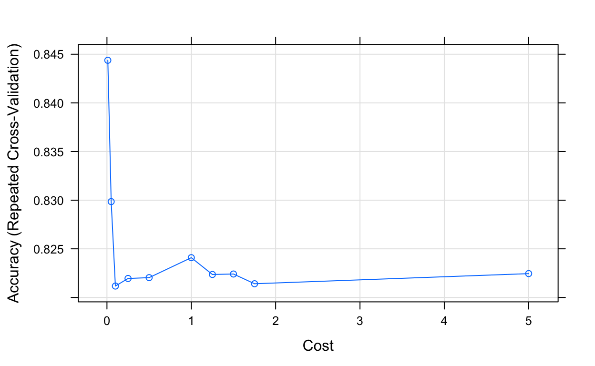

Introduction
This tutorial will introduce you to Support Vector Machines (SVM). SVM’s represent a powerfull Supervised Learning technique for general classification, regression and outlier detection. Basically, this method classifies data into one of two categories using an optimal linear seperator. A few applications include facial recognition, text categorization, classification of images, and Bioinformatics.
Is this tutorial for you?
Do you need to work through the tutorial? Take the quiz below to find out.
Outline
- Introduction
- Data Description
- Part 1: SVM Classifier
- Part 2: Prediction and Confusion Matrix
- Part 3: Tuning Parameter C
- Part 4: SVM using Non-Linear Kernel
- References
Linearly Seperable Case
If data is said to be linearly seperable by an infinite number of hyperplanes, then the goal is to identify the optimal serperating hyperplane (also known as the Maximum Margin Hyperplane). The MMH is calculated using linear combination of distance to support vectors .The MMH should be as far as possible to the support vector of any class therefore the margin needs to be maximized. Intuitively, the goal is to maximize the probability of classifying correctly unseen instances and minimizing the expected generalization loss. If a particular training observation is not a support vector, then its \(\alpha_{i}\) equals zero. Only Support vector is important whereas other training examples are ignorable.
Parameters:
\(C\)
- Non-negative tuning parameter that is usually chosen by cross validation.
- Controls the bias variance trade off between error and margin.
- Bounds the sum of the Slack variables and so it determines the number and severity of the violations to the margin and the hyperplane that it will tolerate.
- As C increases, more tolerant of violations to the margin, therefore margin widens.
\(\epsilon_i\)
- Slack variables are individual observations that are on the wrong side of the margin or hyperplane.
- Approximates the number of misclassifiations.
- Deviation of the examples from the margin.
- Equals 0 if there are no errors (linearly seperable).
\(Maximize\) \(M\) \[\beta_0,\beta_1,...,\beta_p, \epsilon_1...\epsilon_n, M\]
\[subject \sum_{j=1}^{p}\beta_j^2 = 1, \]
\[ y_i = (\beta_0+\beta_1x_{i1}+\beta_2x_{i2}+...+\beta_px_{ip})\geq M(1-\epsilon_i),\]
\[\epsilon_i \geq 0, \sum_{i=1}^{n} \epsilon_i \leq C, \]
where \(C\) is a nonnegative tuning parameter
Non-Linear Seperable Case
When the support vector classifier is combined with a nonlinear kernal the result classifer is a SVM. In order to have better preformance we have to be able to obtain non-linear boundaries. For example using a polynomial kernal allows the use of a flexible decision boundary.
\(K\)
Some function that will be a Kernal, quantifies the similarity of two observations
Non-linear kernal
\[ f(x)= \beta_0 + \sum_{i \in S} \alpha_i K(x,x_i) \]
- Kernal inner product
\[K(x_i,x_i')= \sum_{j=1}^{p} x_{ij} x_{i'j} \]
- Polynomial kernal
\[K(x_i,x_i')= (1 + \sum_{j=1}^{p} x_{ij} x_{i'j})^d \]
Advantages of SVM’s
- Algorithms can get a bit complex
- Kernals allow flexibility
- Many applications
Data Description
Setup
We will use the Heart data set found online, which you can find at An Introduction to Statistical Computing. This dataset contains of 13 predictors and a dummy response variable AHD. Among the 13 predictors, Age, Sex and Cholesterol are studied. In this tutorial we will be using Support Vector Machines in order to classify whether a person is prone to Atherosclerotic heart disease, which indicates the prescence of heart disease based on an angiographic test.
Read in Dataset
Note: Remember to check for missing values.
#Read in data
heart = read.csv(here("static","data","Heart.csv"))## [1] TRUEOutput after recoding response variable AHD by replacing Yes and No, as 1 and 0 respectively:
| Age | Sex | ChestPain | RestBP | Chol | Fbs | RestECG | MaxHR | ExAng | Oldpeak | Slope | Ca | Thal | AHD |
|---|---|---|---|---|---|---|---|---|---|---|---|---|---|
| 63 | 1 | typical | 145 | 233 | 1 | 2 | 150 | 0 | 2.3 | 3 | 0 | fixed | 0 |
| 67 | 1 | asymptomatic | 160 | 286 | 0 | 2 | 108 | 1 | 1.5 | 2 | 3 | normal | 1 |
| 67 | 1 | asymptomatic | 120 | 229 | 0 | 2 | 129 | 1 | 2.6 | 2 | 2 | reversable | 1 |
| 37 | 1 | nonanginal | 130 | 250 | 0 | 0 | 187 | 0 | 3.5 | 3 | 0 | normal | 0 |
| 41 | 0 | nontypical | 130 | 204 | 0 | 2 | 172 | 0 | 1.4 | 1 | 0 | normal | 0 |
| 56 | 1 | nontypical | 120 | 236 | 0 | 0 | 178 | 0 | 0.8 | 1 | 0 | normal | 0 |
Split data set
Here we will be splitting the data into a training set and a testing set. We will use the training set for our model building and the testing set for evaluating the model:
set.seed(3033)
trainset <- createDataPartition(y = heart$AHD, p= 0.7, list = FALSE)
training <- heart[trainset,]
testing <- heart[-trainset,]1. SVM Classifier
Train Control Function
The train function from the caret package trains the data for various algorithms. However, before we use the train function we first need to use trainControl method which controls the computational nuances of the train function.
Notice we are setting 3 parameters. The first is the resampling method. We will use repeated cross validation (“repeatedcv”). The second is the number of resampling iterations and the third is the number of complete sets of folds to compute for repeated cross validation. Lets use 10 and 5 respectively.
Below specify repeated cross validation as the sampling method and the number of resampling iterations and number of repeats as 10 and 5 respectively:
trainctrl = trainControl(method = "", number = , repeats = )trainctrl = trainControl(method = "repeatedcv", number = 10, repeats = 5)Note that this won’t produce any results.
SVM Linear
Now that we have used the trainControl method we can use the train method to train the SVM classifier
The method parameter specifies which classification model to use. Let’s use a linear one (“svmLinear”). This means that the decision boundary between the two classes will be linear. We will build a model using a non-linear kernel later on.
In order to get the best accuracy we need to pre-process our data. The preProcess parameter allows us to do this by centering and scaling the data. Here we use both center and scale to standardize our data to have a mean of approximately 0 and sd 1. Lastly, the tuneLength parameter is for tuning our algorithm. Let’s use a value of 10.
Input the method and tuneLength parameter then check the results stored in the svm_linear variable:
trainctrl = trainControl(method = "repeatedcv", number = 10, repeats = 5)
set.seed(1234)svm_linear = train(AHD ~., data = training, method = "", trControl=trainctrl, preProcess = c("center", "scale"), tuneLength = )svm_linear = train(AHD ~., data = training, method = "svmLinear", trControl=trainctrl, preProcess = c("center", "scale"), tuneLength = 10)
svm_linearFrom the results we can see that a Linear Kernel was used and that the tuning parameter C was held at a value of 1. We will explore the impact of these two parameters later on.
2. Prediction and Confusion Matrix
Now we can use the predict function with the trained SVM model to make predictions using the test set. The predict function takes two arguments. The first one is the trained model and the second one takes the testing data frame. This will return a list.
We will store the results in the test_predict variable.
Once we store our results, we can create a confusion matrix in order to check the accuracy of our model
trainctrl = trainControl(method = "repeatedcv", number = 10, repeats = 5)
set.seed(1234)
svm_linear = train(AHD ~., data = training, method = "svmLinear", trControl=trainctrl, preProcess = c("center", "scale"), tuneLength = 10)test_predict = predict(svm_linear, newdata = testing)
confusionMatrix(test_predict, testing$AHD)## Confusion Matrix and Statistics
##
## Reference
## Prediction 0 1
## 0 40 8
## 1 8 33
##
## Accuracy : 0.8202
## 95% CI : (0.7245, 0.8936)
## No Information Rate : 0.5393
## P-Value [Acc > NIR] : 2.567e-08
##
## Kappa : 0.6382
##
## Mcnemar's Test P-Value : 1
##
## Sensitivity : 0.8333
## Specificity : 0.8049
## Pos Pred Value : 0.8333
## Neg Pred Value : 0.8049
## Prevalence : 0.5393
## Detection Rate : 0.4494
## Detection Prevalence : 0.5393
## Balanced Accuracy : 0.8191
##
## 'Positive' Class : 0
## Confusion Matrix Quiz
3. Tuning Parameter C
Now let’s explore the impact of tuning parameter C.
We can think of C as a budget for the amount that the margin can be violated by the n observations. When C is small, we seek narrow margins that are rarely violated; this amounts to a classifier that is highly fit to the data, which may have low bias but high variance. On the other hand, when C is larger,the margin is wider and we allow more violations to it; this amounts to fitting the data less hard and obtaining a classifier that is potentially more biased but may have lower variance.
In this exercise we will perform cross validation in order to select our C parameter. The following code snippet inputs some arbitrary values of C using expand.grid() into “grid” data frame. It then uses this dataframe for testing the classifier at specific C values.
To complete the exercise below input the values 0.01, 0.05, 0.1, 0.25, 0.5, 1, 1.25, 1.5, 1.75, 5 inside c().
grid = expand.grid(C = c(0.01, 0.05, 0.1, 0.25, 0.5, 1, 1.25, 1.5, 1.75, 5))
set.seed(1234)
svm_linear_grid = train(AHD ~., data = training, method = "svmLinear", trControl=trainctrl, preProcess = c("center", "scale"), tuneGrid = grid, tuneLength = 10)grid = expand.grid(C = c())
set.seed(1234)
svm_linear_grid = train(AHD ~., data = training, method = "svmLinear", trControl=trainctrl, preProcess = c("center", "scale"), tuneGrid = grid, tuneLength = 10)
svm_linear_gridHere we produce a plot that shows at what value of C our svm classifier is giving best accuracy
plot(svm_linear_grid)
Notice from the output below that the number of support vectors has increased from 74 to 117. Now that a smaller value of the cost parameter is being used (C = .01 as opposed to C = 1), we obtain a larger number of support vectors, because the margin is now wider
svm_linear$finalModel## Support Vector Machine object of class "ksvm"
##
## SV type: C-svc (classification)
## parameter : cost C = 1
##
## Linear (vanilla) kernel function.
##
## Number of Support Vectors : 74
##
## Objective Function Value : -63.0484
## Training error : 0.120192svm_linear_grid$finalModel## Support Vector Machine object of class "ksvm"
##
## SV type: C-svc (classification)
## parameter : cost C = 0.01
##
## Linear (vanilla) kernel function.
##
## Number of Support Vectors : 117
##
## Objective Function Value : -0.9605
## Training error : 0.129808Let’s check the accuracy of our model again, but this time with a cross parameter value of .01
test_pred_grid = predict(svm_linear_grid, newdata = testing)
confusionMatrix(test_pred_grid, testing$AHD)## Confusion Matrix and Statistics
##
## Reference
## Prediction 0 1
## 0 41 7
## 1 7 34
##
## Accuracy : 0.8427
## 95% CI : (0.7502, 0.9112)
## No Information Rate : 0.5393
## P-Value [Acc > NIR] : 1.452e-09
##
## Kappa : 0.6834
##
## Mcnemar's Test P-Value : 1
##
## Sensitivity : 0.8542
## Specificity : 0.8293
## Pos Pred Value : 0.8542
## Neg Pred Value : 0.8293
## Prevalence : 0.5393
## Detection Rate : 0.4607
## Detection Prevalence : 0.5393
## Balanced Accuracy : 0.8417
##
## 'Positive' Class : 0
## Looking at the results we can see that the accuracy has increased from 82.02% to 84.27%.
4. SVM using Non-Linear Kernel
Now that we have explored the impact of tuning parameter C on our SV classifier, let’s build a model using a non-linear Kernel. For this exercise we will use the Radial Basis Function (svmRadial).
Input the method in the code chunk below:
set.seed(1234)
svm_radial = train(AHD ~., data = training, method = , trControl=trainctrl, preProcess = c("center", "scale"), tuneLength = 10)set.seed(1234)
svm_radial = train(AHD ~., data = training, method = "svmRadial", trControl=trainctrl, preProcess = c("center", "scale"), tuneLength = 10)The code below tunes our classifier with different values of C and sigma. We will be using grid search again to do so. Note that since we are using a radial kernel we need to specify sigma as well.
grid_radial <- expand.grid(sigma = c(.01, 0.05, 0.1, 0.25, 0.5), C = c(0.01, 0.05, 0.1, 0.5, 1))
set.seed(1234)
svm_radial_grid <- train(AHD ~., data = training, method = "svmRadial", trControl=trainctrl, preProcess = c("center", "scale"), tuneGrid = grid_radial, tuneLength = 10)
svm_radial_grid## Support Vector Machines with Radial Basis Function Kernel
##
## 208 samples
## 13 predictor
## 2 classes: '0', '1'
##
## Pre-processing: centered (16), scaled (16)
## Resampling: Cross-Validated (10 fold, repeated 5 times)
## Summary of sample sizes: 187, 188, 187, 188, 187, 186, ...
## Resampling results across tuning parameters:
##
## sigma C Accuracy Kappa
## 0.01 0.01 0.5385974 0.000000000
## 0.01 0.05 0.5395065 0.002162162
## 0.01 0.10 0.8184242 0.624717042
## 0.01 0.50 0.8499567 0.694133429
## 0.01 1.00 0.8461472 0.687313566
## 0.05 0.01 0.5385974 0.000000000
## 0.05 0.05 0.7666667 0.512271283
## 0.05 0.10 0.8431991 0.679164607
## 0.05 0.50 0.8412338 0.676788024
## 0.05 1.00 0.8372900 0.669353308
## 0.10 0.01 0.5385974 0.000000000
## 0.10 0.05 0.5904935 0.121161179
## 0.10 0.10 0.8123766 0.613169556
## 0.10 0.50 0.8413333 0.677512515
## 0.10 1.00 0.8353853 0.665815369
## 0.25 0.01 0.5385974 0.000000000
## 0.25 0.05 0.5385974 0.000000000
## 0.25 0.10 0.5385974 0.000000000
## 0.25 0.50 0.7789697 0.543913136
## 0.25 1.00 0.8170087 0.630330732
## 0.50 0.01 0.5385974 0.000000000
## 0.50 0.05 0.5385974 0.000000000
## 0.50 0.10 0.5385974 0.000000000
## 0.50 0.50 0.5721039 0.078128550
## 0.50 1.00 0.7194719 0.414951233
##
## Accuracy was used to select the optimal model using the largest value.
## The final values used for the model were sigma = 0.01 and C = 0.5.plot(svm_radial_grid)
We can see that the best values selected for C and sigma were .5 and .01 respectively
Lastly, let’s check the accuracy of our model by creating aconfusion matrix like we did with the linear svm classifier.
test_pred_radial = predict(svm_radial_grid, newdata = testing)
confusionMatrix(test_pred_radial, testing$AHD)# Place code heretest_pred_radial = predict(svm_radial_grid, newdata = testing)
confusionMatrix(test_pred_radial, testing$AHD)References
- Gareth, James, et al. An Introduction to Statistical Learning: with Application in R pg.337-368. Springer Texts in Statistics An Introduction to Statistical Computing